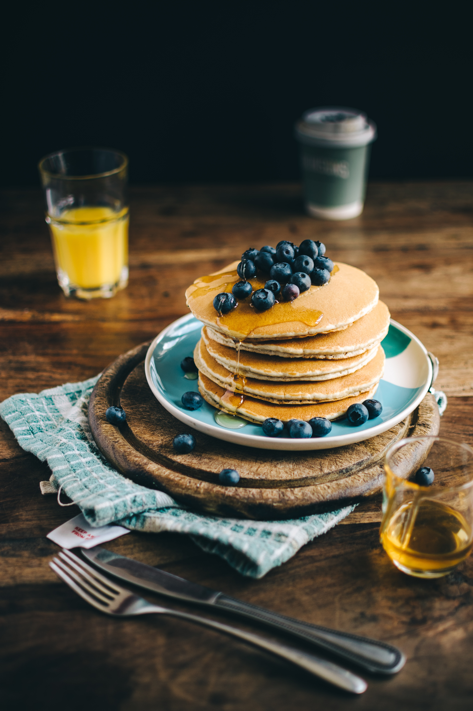

American Pancakes

American Pancakes are made from thick batter that consists of
flour, eggs, milk and baking powder. Additionally, fruit like
strawberries, blueberries or apples can be added to the batter
along other ingredients such as chocolate chips.
Usually when served, the pancakes are stacked on top of each other and then
topped with a variety of ingriedients such as butter, mayple syrup,
honey, fruit or whipped cream.
This easy American Pancakes recipe makes light and fluffy pancakes that are great for breakfeast or brunch.
Ingredients
- 2 Eggs
- 50g Sugar
- 250ml Milk
- 2 tbsp Melted Butter
- 15g Baking Poweder
- 200g Flour
- 15g Vanilla Sugar
- 1/2 tsp Salt
Steps
- In a microwave or frying pan, melt the butter on a small heat so that the oil does not burn.
- In a bowl, lightly whisk the eggs, sugar and milk and then whisk in the melted butter.
- In a seperate large bowl, sift the flour, baking powder, salt and vanilla.
- Pour the milk mixture into the flour mixture and using a fork, beat
until you have a smooth batter. Let the batter stand for a few minutes.
- Heat a non-stick frying pan over a medium heat and add a knob of butter. When the
butter melts, add a ladle of batter.
- Wait for about 3 minutes until the top of the pancakes begins to bubble and the edges begin to set and
then flip it over for another 2 minutes until both sides are golden brown.
- Reapeat until all the batter is used up.
- Serve with maple syrup, extra butter or fruit, if you like.